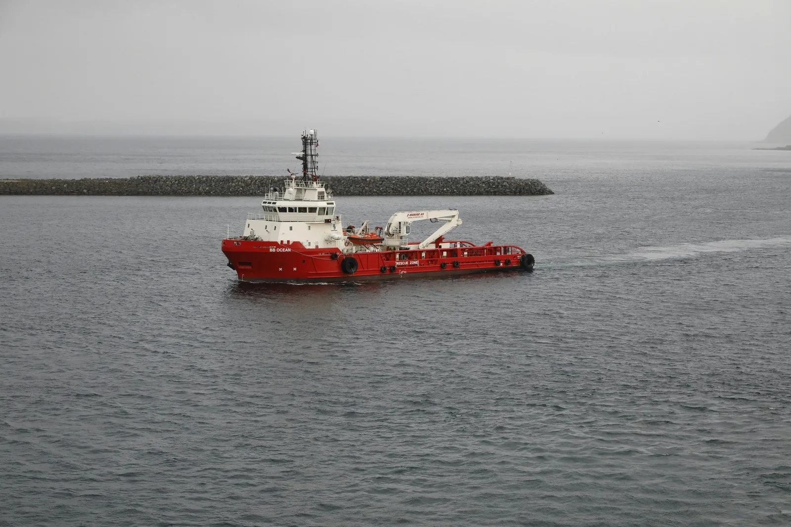
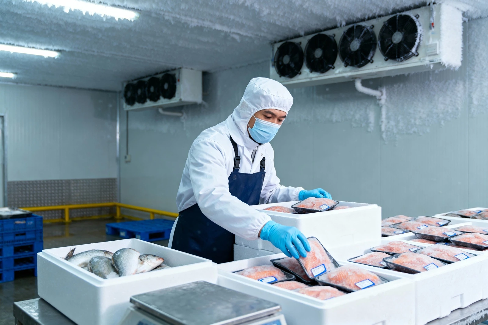
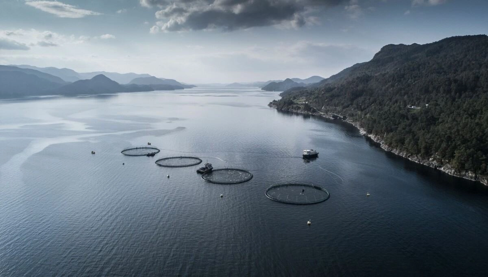
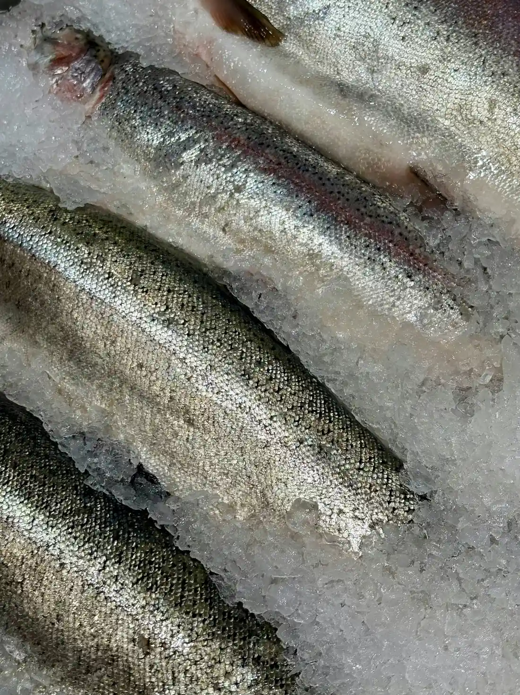
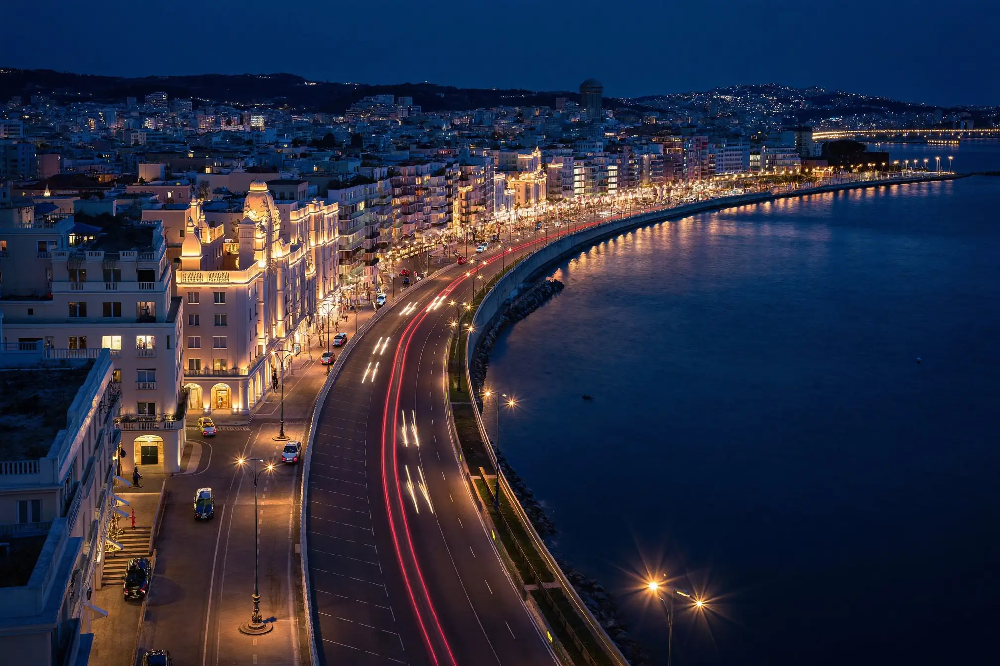
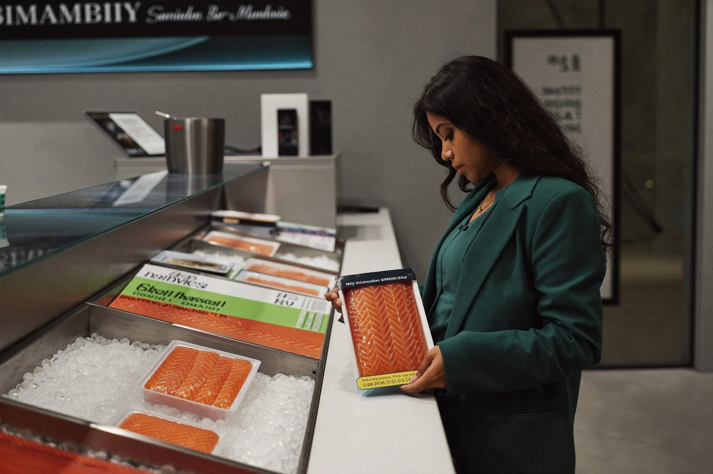
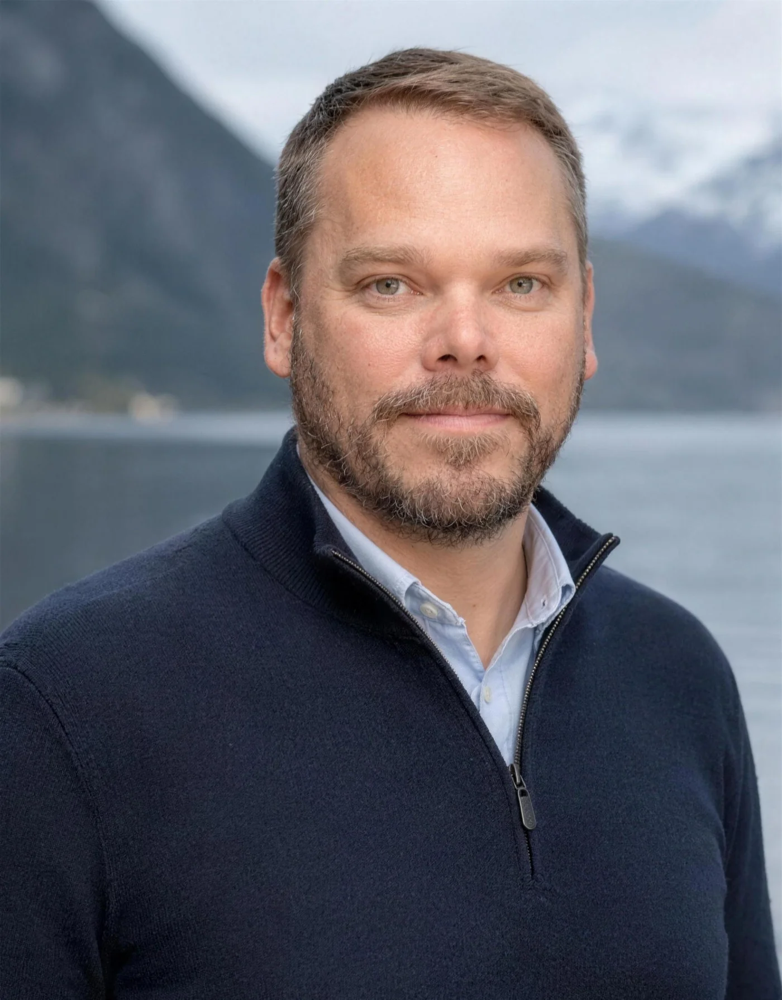

Trade brand · B2B
NorSeafood
Frozen whole Norwegian salmon supplied to importers, processors and distributors seeking reliable long-term supply.
Current focus: frozen whole Atlantic salmon
Explore NorSeafood
Connecting premium Norwegian seafood with the next generation of Indian consumers, distributors and food businesses.

Great seafood begins long before it reaches a plate. It begins with cold waters, responsible stewardship and generations of maritime expertise. But above all, it begins with people.
Norwegian Sustainable Seafood was founded to build a dedicated bridge between Norway and India. Through NorSeafood, we connect Norwegian producers with Indian importers, processors and distributors. Through Kelda, we bring premium Norwegian seafood closer to Indian consumers.

Everything begins in Norway. Quality. Consistency. Respect for the ocean.
Along one of the world's longest coastlines, cold waters and strong ocean currents create ideal conditions for premium seafood. This is not simply where our products come from. It is where our values come from.

Frozen whole Norwegian salmon supplied to importers, processors and distributors seeking reliable long-term supply.
Current focus: frozen whole Atlantic salmon
Explore NorSeafood
Inspired by Norway. Created for India. Consumer-ready seafood products for the Indian market, built on Norwegian origin and designed for modern Indian consumers and food experiences.
Explore KeldaEvery decision we make is guided by a commitment to responsible sourcing, uncompromising quality standards, and long-term partnerships that create lasting value.
Without compromise.
Without shortcuts.
Without end dates.
Without sacrificing responsibility.



India is entering a new chapter in food consumption.
A growing middle class. Rising disposable income. Greater demand for premium international food experiences.

The strongest businesses are built when people, cultures and opportunities come together around a shared vision.
Henning B. FigenschouFounder & CEO
Henning and his partners, Amit and Prakash, are based between Norway and India, working directly with first-wave import and HoReCa partners to understand what the Indian market needs from a Norwegian seafood supplier.
Looking for a long-term seafood partner?
Whether you are interested in Kelda products, seafood sourcing or distribution partnerships, we would like to hear from you.